Anypoint Connector Tutorial
After learning some of the basic functionality in the Basic Studio Tutorial and How to Create a Mule App Tutorial, it’s time to try your hand at enriching your application with an Anypoint Connector.
| Anypoint Studio comes with a set of connectors that you can easily add to your Studio flow to connect your application. You can find all certified connectors in Anypoint Exchange. |
What is an Anypoint Connector?
Anypoint Connectors are extensions for Mule that allow you to operate as you would normally in external systems such as Salesforce, Google Contacts, ServiceNow, Workday, Facebook, Twitter or MongoDB to integrate information from these systems to create something new. Connectors simplify the interaction with the SaaS providers' APIs, providing methods for most or all of the available operations.
How to Configure
Typically, you perform these steps to configure a connector:
-
Store the authentication, connection or other settings in a properties file Configuring Properties.
-
Reference the properties from the connector configuration. The connector configuration is automatically stored by Studio as a global element for use by any other connector instance using the same properties.
-
Test the connection from the configuration dialog.
| Properties files provide a convenient mechanism for storing variables in a central location. |
Much of the functionality of each individual connector is dependent upon its target; that said, there are many features common to most connectors. After creating and running the applications in this tutorial, you should be able to apply what you’ve learned to connect applications to various SaaS applications.
Prerequisites
This tutorial assumes that you have downloaded and installed Anypoint Studio. If you do not have any previous experience with Eclipse or an Eclipse-based IDE, you can review the brief introduction to the Anypoint Studio interface and the document describing Global Elements in Mule. Further, consider following the Basic and Content-Based Routing tutorials.
| You must obtain Twitter developer access to a Twitter app that you create to complete this tutorial. See [Obtaining Access to the Twitter API] for how to get Twitter developer access and create a simple app. |
Goals
In this tutorial, your goals are to:
-
Walk through the process for obtaining Twitter API access and credentials.
-
Create an application in Anypoint Studio that uses a connector to access the Twitter API.
-
Learn how to use Global Elements and Foreach scope in the application.
-
Run the application on a local runtime embedded in Anypoint Studio.
-
Test the application using a browser.
-
Stop the application.
-
(Optional) Apply your knowledge to an extra credit challenge.
Obtain Access to the Twitter API
To use the Twitter API you must first create a Twitter developer account and obtain a set of credentials.
-
If you don’t already have one, create a regular Twitter account. You may wish to create an account specifically for testing for posting things to Twitter in this exercise. Twitter prompts you to create a standard Twitter account. Supply your full name, email address, a password, and user name. Go through the prompts to complete the process. Twitter sends you a confirmation email, or a text message if you supplied a phone number.
-
Visit the Twitter dev.twitter.com Developer’s page and sign in using your Twitter account credentials. This activity creates a separate developer account for you, with an association to your regular Twitter account.
-
To create a new Twitter Application, navigate to https://apps.twitter.com/.
-
Complete the Application Details form according to the table and image below.
Field Value Name
A name for your application which must be unique to the Twitter system and which cannot contain the word "Twitter".
Description
A brief overview of the application you are building.
Website
An entry is required here, however, because this Twitter application is not public, this field is not meaningful; enter a full URL placeholder value. You can use a name like
http://www.example.com. Note that partial URLs likeexample.comare not accepted.Callback URL
Leave blank.
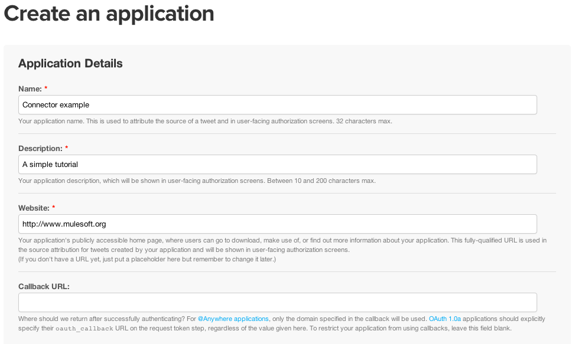 -
Agree to the terms and click Create your Twitter application.
-
Click the Keys and Access Tokens tab and scroll down to click Create my access token.
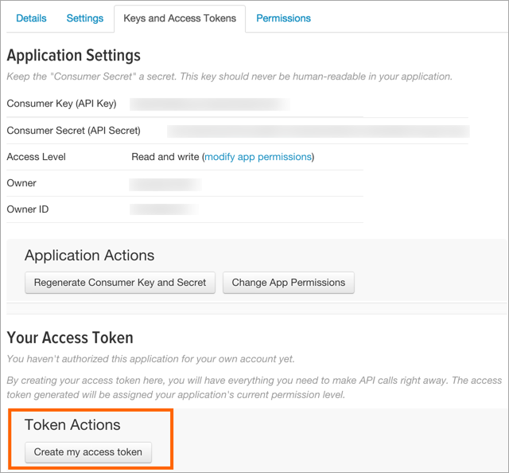Using an access token, you can easily connect with the Twitter API using your application. However, your access to the API is restricted to your user account. For the purposes of this tutorial, an access token gives you the access you need for your application to interact with the Twitter API.
Later, if you want to expose such an application publicly, you need to configure your application to authenticate via OAuth.
-
Scroll down the page in the browser to display the values for Access token and Access token secret. Because you need to enter these values in Anypoint Studio, record the following four keys from Twitter (refer to the image below):
-
Consumer Key
-
Consumer Secret
-
Access Token
-
Access Token Secret
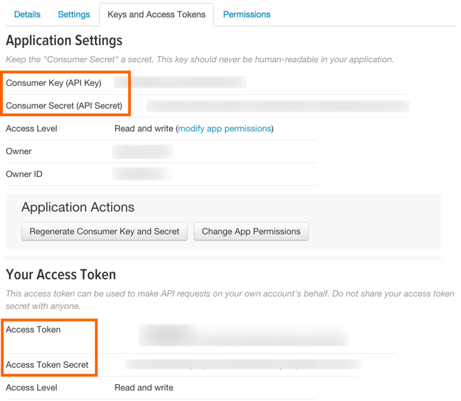
-
Create a Project and Construct a Flow
To create a flow:
-
Launch Anypoint Studio.
-
Create a new Mule Project named
Connector Tutorial. If you need more directions on launching Studio and creating a project, see Basic Studio Tutorial. Press CMD + s (or CTRL + s in Windows) to save your project. -
Click the X at the left of the Studio task bar to open Anypoint Exchange. Type
twitterto locate the Twitter connector. Click Install: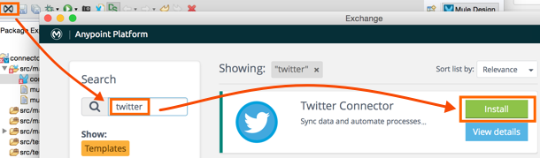Supply your name, email address, and phone. Follow the prompts and when requested, restart Studio.
-
Search for the building blocks in the Studio palette and drag each to create this application:
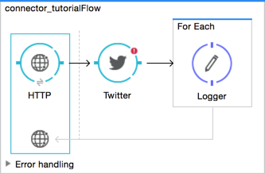Allows your Mule application to connect to web resources through the HTTP or HTTPS protocol. The HTTP connector receives an HTTP request.
Enables you to perform operations against one or more Twitter resources. The Twitter connector submits a query over Twitter’s API to retrieve a user’s timeline of Tweets.
Processes each item in a POJO iteratively.
Logs messages or activity based on the value of a Mule expression. In this application, logs each individual Tweet, displaying the Tweets in Studio’s console.
After you configure the individual elements within it, which is in the next section, this flow accomplishes the goals that you set out to achieve with this application. Each building block that you select and place on the canvas performs part of the functionality of your application, as shown in the image below.
Configure the Flow Elements
Next, configure the flow elements to make the application accept HTTP requests, and submit queries to Twitter for a user’s Tweet timeline. Your goal is to invoke http://localhost:8081/gettweets?sname=mulesoft and have the application send a request to Twitter to retrieve all of the recent Tweets of the particular Twitter user specified in the query parameter, which, in this example, is MuleSoft.
Nearly all Mule elements provide configuration options, which you can set in one of two ways:
-
Via the building block Properties Editor in the console of Studio’s visual editor
-
Via XML code in Studio’s XML editor, or in any other XML editing environment
The following instructions walk you through how to configure each building block in the visual editor and via XML. Use the tabs to switch back and forth between the instructions for the visual editor and the XML editor.
Configure the HTTP Connector
Studio Visual Editor
-
Click the HTTP building block in your flow to open its Properties Editor. For this element to work, we set an abstract element called a Connector Configuration, which contains several of the high-level necessary configuration properties. A single Connector Configuration element can be referenced by as many HTTP connectors as you like. Create a new Connector Configuration element by clicking the green plus sign next to the Connector Configuration field.
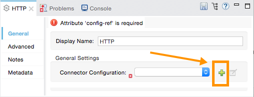 -
A new window opens. Fill in the two required fields: Host and Port. Set Host to
localhostand leave Port with the default value8081. You can ignore the remaining fields in this menu.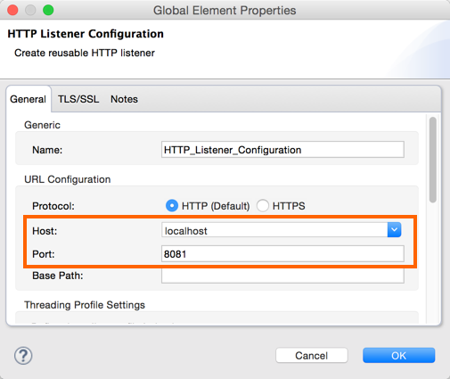Field Value Name
HTTP_Listener_ConfigurationHost
localhostPort
8081 -
Click Ok to close this dialogue. Notice how the Connector Configuration field now contains a reference to the element you just created. You can edit it further by clicking the
editicon. -
Now provide a value for the required field Path:
gettweets.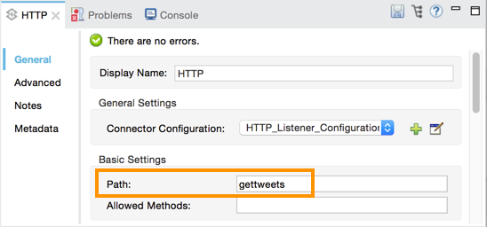Field Value Path
gettweets
XML Editor or Standalone
Configure the HTTP connector as follows:
| Attribute | Value |
|---|---|
doc:name |
|
config-ref |
|
path |
|
For this element to work, you must reference an abstract element called a Connector Configuration, which contains several of the high level necessary configuration properties. One single Connector Configuration element can be referenced by as many HTTP connectors as you like. The attribute in the connector config-ref references this connector configuration element. You must now create an element outside the flow that matches the referenced name.
<http:listener-config name="HTTP_Listener_Configuration" host="localhost" port="8081" doc:name="HTTP Listener Configuration"/>| Attribute | Value |
|---|---|
name |
|
host |
|
port |
|
doc:name |
|
Configure the Twitter Connector
Note: To complete this section, you need Twitter developer access to an app you created. See [Obtaining Access to the Twitter API].
Studio Visual Editor
Click the Twitter connector to open its Properties Editor, then enter values for the fields according to the table below.
| Field | Description |
|---|---|
Display Name |
The name Studio displays for the element in the flow. Value: |
Operation |
Defines the operation to perform on Twitter; this value returns a Tweet stream from the Twitter user you specify. Value: |
Screen Name |
Defines the Twitter user; set to an expression that extracts a parameter from the HTTP request. Value: |
Page |
Specifies the page of results to retrieve. 1 is the default value. Value: |
Count |
Defines the number of Tweets the query returns. 20 is the default value. Value: |
Since Id |
Returns results with an ID value greater than the one specified here. -1 is the default value. Value: |
XML Editor or Standalone
Configure the Twitter connector as follows (note that one attribute is excluded on purpose; add the attribute in the next step):
<twitter:get-user-timeline-by-screen-name doc:name="Twitter" screenName="#[message.inboundProperties.'http.query.params'.sname]"/>| Element | Description |
|---|---|
|
Defines the operation to perform on Twitter; this value returns a Tweet stream from the Twitter user you specify. |
| Attribute | Value | Description |
|---|---|---|
doc:name |
|
The name Studio displays for the element in the flow. |
screenName |
|
Defines the Twitter user; set to an expression that extracts a parameter from the HTTP request. |
You may notice that the Studio visual editor displays a red x and a note that the config-ref attribute is required. Studio is alerting you that this connector requires a global connector configuration, which you define as a global element. A global element allows you to enter configuration information once, then reference the credentials from multiple elements in a flow or in multiple flows. In this case, you use the Twitter global element to configure all your connection details and API access credentials which the Twitter connector in your flow uses when it queries Twitter.
Read more about Global Elements in Mule.
Studio Visual Editor
-
Click the plus sign next to the Connector Configuration field.
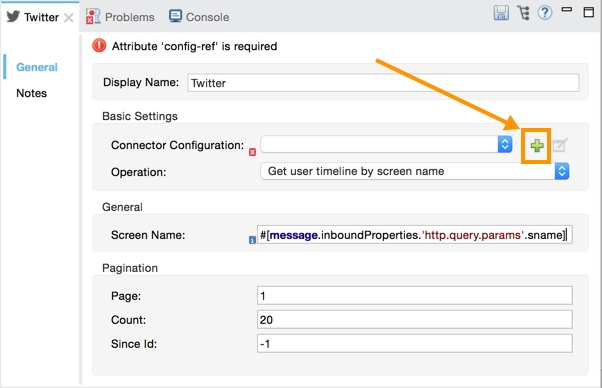 -
Enter values for the fields according to the table below.
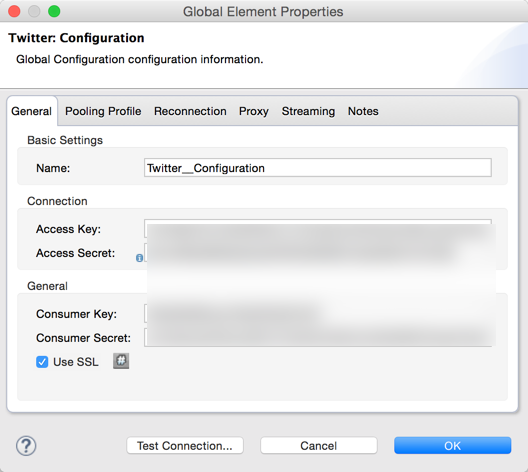Field Value Name
TwitterAccess Key
Your unique Access Token value as obtained from Twitter
Access Secret
Your unique Access Token Secret value as obtained from Twitter
Consumer Key
Your unique Consumer Key value as obtained from Twitter
Consumer Secret
Your unique Consumer Secret value as obtained from Twitter
Use SSL
true(checked) -
Click Test Connection to ensure your credentials are correct. If successful, Studio displays:
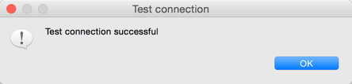 -
Click OK to save the configuration. The Connector Configuration field should now be populated with the name of the global element you just created,
Twitter.
XML Editor or Standalone
-
Above all flows in your application, configure the global element as follows:
<twitter:config name="Twitter" accessKey="" accessSecret="" consumerKey="" consumerSecret="" doc:name="Twitter">Attribute Value name
TwitteraccessKey
Your unique Access Token value as obtained from Twitter
accessSecret
Your unique Access Token Secret value as obtained from Twitter
consumerKey
Your unique Consumer Key value as obtained from Twitter
consumerSecret
Your unique Consumer Secret value as obtained from Twitter
doc:name
Twitter
-
Revisit the configuration of the Twitter connector in your flow. Add the
config-refattribute as follows:<twitter:get-user-timeline-by-screen-name config-ref="Twitter" doc:name="Twitter" screenName="#[message.inboundProperties.'http.query.params'.sname]"/>
Configure a For-Each Scope
When Twitter returns a response to the query, the payload is an array of objects, each of which describes a Tweet and its attending metadata. The only field this application needs to access is text, as it contains the actual Tweet content. You can access the text of the latest Tweet via the expression #[message.payload[0].text], but this application uses a Foreach scope to access the text of every Tweet in the array.
Studio Visual Editor
Click the Foreach to open its Properties Editor. Keep the default values, as shown below.
| Field | Value |
|---|---|
Display Name |
|
Counter Variable Name |
|
Batch Size |
|
Root Message Variable Name |
|
XML Editor or Standalone
Add a Foreach scope as follows:
| Attribute | Value |
|---|---|
doc:name |
|
Configure the Logger
Studio Visual Editor
Click the Logger to open its Properties Editor, then enter values for the fields according to the table below.
| Field | Value |
|---|---|
Display Name |
|
Message |
|
Level |
`INFO ` |
XML Editor or Standalone
Configure the Logger, inside the Foreach scope, as follows:
| Attribute | Value |
|---|---|
doc:Name |
|
message |
|
level |
`INFO ` |
Your complete application XML, once configured, should look like the code below.
|
Keep in mind that for this example to work, you must manually configure the following values of the Twitter global element (
|
<?xml version="1.0" encoding="UTF-8"?>
<mule xmlns:twitter="http://www.mulesoft.org/schema/mule/twitter" xmlns:http="http://www.mulesoft.org/schema/mule/http" xmlns="http://www.mulesoft.org/schema/mule/core" xmlns:doc="http://www.mulesoft.org/schema/mule/documentation"
xmlns:spring="http://www.springframework.org/schema/beans"
xmlns:xsi="http://www.w3.org/2001/XMLSchema-instance"
xsi:schemaLocation="http://www.springframework.org/schema/beans http://www.springframework.org/schema/beans/spring-beans-current.xsd
http://www.mulesoft.org/schema/mule/core http://www.mulesoft.org/schema/mule/core/current/mule.xsd
http://www.mulesoft.org/schema/mule/http http://www.mulesoft.org/schema/mule/http/current/mule-http.xsd
http://www.mulesoft.org/schema/mule/twitter http://www.mulesoft.org/schema/mule/twitter/current/mule-twitter.xsd">
<http:listener-config name="HTTP_Listener_Configuration" host="localhost" port="8081" doc:name="HTTP Listener Configuration"/>
<twitter:config name="Twitter__Configuration" accessKey="Access_Key" accessSecret="Access_Secret" consumerKey="Consumer_Key" consumerSecret="Consumer_Secret" doc:name="Twitter: Configuration"/>
<flow name="connector_tutorialFlow">
<http:listener config-ref="HTTP_Listener_Configuration" path="gettweets" doc:name="HTTP"/>
<twitter:get-user-timeline-by-screen-name config-ref="Twitter__Configuration" screenName="#[message.inboundProperties.'http.query.params'.sname]" doc:name="Twitter"/>
<foreach doc:name="For Each">
<logger message="#[payload.text]" level="INFO" doc:name="Logger"/>
</foreach>
</flow>
</mule>Run the Application
Having built, configured, and saved your new application, you are ready to run it on the embedded Mule server (included as part of the bundled download of Anypoint Studio).
-
In the Package Explorer, right-click project name, then select Run As > Mule Application . (If you have not already saved, Mule prompts you to save now.)
-
Mule immediately kicks into gear, starting your application and letting it run. When the startup process is complete, Studio displays a message in the console that reads,
Started app 'connector_tutorial'.********************************************************************** * Application: connector_tutorial * * OS encoding: /, Mule encoding: UTF-8 * * * * Agents Running: * * JMX Agent * * Batch module default engine * * DevKit Extension Information * * Wrapper Manager * ********************************************************************** INFO 2016-05-03 04:50:02,891 [main] org.mule.module.launcher.MuleDeploymentService: ++++++++++++++++++++++++++++++++++++++++++++++++++++++++++++ + Started app 'connector_tutorial' + ++++++++++++++++++++++++++++++++++++++++++++++++++++++++++++ INFO 2016-05-03 04:50:02,931 [main] org.mule.module.launcher.DeploymentDirectoryWatcher: ++++++++++++++++++++++++++++++++++++++++++++++++++++++++++++ + Mule is up and kicking (every 5000ms) + ++++++++++++++++++++++++++++++++++++++++++++++++++++++++++++ INFO 2016-05-03 04:50:02,936 [main] org.mule.module.launcher.StartupSummaryDeploymentListener: ********************************************************************** * - - + DOMAIN + - - * - - + STATUS + - - * ********************************************************************** * default * DEPLOYED * ********************************************************************** ********************************************************************************************** * - - + APPLICATION + - - * - - + DOMAIN + - - * - - + STATUS + - - * ********************************************************************************************** * connector_tutorial * default * DEPLOYED * **********************************************************************************************
Using the Application
-
Open a Web browser, then navigate to the following URL:
http://localhost:8081/gettweets?sname=mulesoft -
This request initiates a request to the application which, ultimately, returns a
gettweetsfile that your browser prompts you to download. Rather than downloading the file, return to Anypoint Studio and check the contents of the console for logged messages. The console displays a set of 20 log entries that list the latest Tweets from MuleSoft’s official Twitter account:INFO 2016-05-03 04:52:21,953 [[connector_tutorial].HTTP_Listener_Configuration.worker.01] org.mule.api.processor.LoggerMessageProcessor: We live in a time of #digital Darwinism: when digital technology is driving business evolution and success https://t.co/TvzOl4qhg9 #CIO #CEO INFO 2016-05-03 04:52:21,954 [[connector_tutorial].HTTP_Listener_Configuration.worker.01] org.mule.api.processor.LoggerMessageProcessor: Companies often pass through 6 sequential phases on their path to #digital transformation https://t.co/TvzOl4qhg9 #CIO #CEO INFO 2016-05-03 04:52:21,955 [[connector_tutorial].HTTP_Listener_Configuration.worker.01] org.mule.api.processor.LoggerMessageProcessor: @esfand Hahaha it's our pleasure Esfand! INFO 2016-05-03 04:52:21,955 [[connector_tutorial].HTTP_Listener_Configuration.worker.01] org.mule.api.processor.LoggerMessageProcessor: Learn how @CocaCola, @Cisco and @Docusign are executing #digital transformation. Register now! https://t.co/cTNqyKfpXL #CONNECT16 #CIO INFO 2016-05-03 04:52:21,956 [[connector_tutorial].HTTP_Listener_Configuration.worker.01] org.mule.api.processor.LoggerMessageProcessor: RT @MuleDev: A tutorial by @PriyobrotoGhos2 on how to use #Java Arrays with Oracle database and #Mule! https://t.co/i7t4N1tVvN INFO 2016-05-03 04:52:21,957 [[connector_tutorial].HTTP_Listener_Configuration.worker.01] org.mule.api.processor.LoggerMessageProcessor: The Race Against #Digital Darwinism: The Six Stages of Digital Transformation https://t.co/TvzOl4qhg9 #CIO #CEO INFO 2016-05-03 04:52:21,958 [[connector_tutorial].HTTP_Listener_Configuration.worker.01] org.mule.api.processor.LoggerMessageProcessor: Learn how @Audi is executing a 3 year #digital journey and shift in culture https://t.co/yQTfEBg3h1 (via @CMOAustralia) #CIO #CMO INFO 2016-05-03 04:52:21,958 [[connector_tutorial].HTTP_Listener_Configuration.worker.01] org.mule.api.processor.LoggerMessageProcessor: .@Audi has embarked on a 3 year #digital journey to better engage with customers https://t.co/yQTfEBg3h1 (via @CMOAustralia) #CIO #CMO INFO 2016-05-03 04:52:21,959 [[connector_tutorial].HTTP_Listener_Configuration.worker.01] org.mule.api.processor.LoggerMessageProcessor: How @Audi Australia built a #digital practice https://t.co/yQTfEBg3h1 (via @CMOAustralia) #CIO #CMO INFO 2016-05-03 04:52:21,960 [[connector_tutorial].HTTP_Listener_Configuration.worker.01] org.mule.api.processor.LoggerMessageProcessor: Every company is grappling to cope w/ #digital transformation. This is Enterprise Darwinism. (via @ITProPortal) https://t.co/ot23NDwqOO #CIO INFO 2016-05-03 04:52:21,960 [[connector_tutorial].HTTP_Listener_Configuration.worker.01] org.mule.api.processor.LoggerMessageProcessor: Enterprise Darwinism and the centre for enablement (via @ITProPortal) https://t.co/ot23NDwqOO #CIO #digital INFO 2016-05-03 04:52:21,961 [[connector_tutorial].HTTP_Listener_Configuration.worker.01] org.mule.api.processor.LoggerMessageProcessor: The most adaptable companies are surviving. This is Enterprise Darwinism. (via @ITProPortal) https://t.co/ot23NDwqOO #CIO #digital INFO 2016-05-03 04:52:21,962 [[connector_tutorial].HTTP_Listener_Configuration.worker.01] org.mule.api.processor.LoggerMessageProcessor: Marc @Benioff started as a #Sales Dev Rep at Oracle. Are you ready for a role in tech sales? https://t.co/MDqR98rxRO #RunWithTheMules INFO 2016-05-03 04:52:21,962 [[connector_tutorial].HTTP_Listener_Configuration.worker.01] org.mule.api.processor.LoggerMessageProcessor: Two of the most important skills in building a successful career are #sales and people management https://t.co/xmU9NnDb6I #RunWithTheMules INFO 2016-05-03 04:52:21,963 [[connector_tutorial].HTTP_Listener_Configuration.worker.01] org.mule.api.processor.LoggerMessageProcessor: RT @MuleDev: Super helpful video tutorial by @LuisKiet displaying how to create a custom connector: https://t.co/UeZaFPK35X INFO 2016-05-03 04:52:21,964 [[connector_tutorial].HTTP_Listener_Configuration.worker.01] org.mule.api.processor.LoggerMessageProcessor: RT @Suave_Swappy: @MuleDev Working with RAML files today and MuleSoft just provides the best of environment to integrate and work..luving i… INFO 2016-05-03 04:52:21,964 [[connector_tutorial].HTTP_Listener_Configuration.worker.01] org.mule.api.processor.LoggerMessageProcessor: RT @MuleDev: Check out this blog by @jonakerstrom to see some awesome #MuleSoft hacks! https://t.co/MZeGn0KPHD INFO 2016-05-03 04:52:21,965 [[connector_tutorial].HTTP_Listener_Configuration.worker.01] org.mule.api.processor.LoggerMessageProcessor: How a Role in Tech #Sales Will Jumpstart Your Career https://t.co/MDqR98rxRO #RunWithTheMules INFO 2016-05-03 04:52:21,966 [[connector_tutorial].HTTP_Listener_Configuration.worker.01] org.mule.api.processor.LoggerMessageProcessor: The always-on, always-connected world is fracturing IT under increasing #digital demands https://t.co/S0gSbhu6un #CIO #dev #integration INFO 2016-05-03 04:52:21,966 [[connector_tutorial].HTTP_Listener_Configuration.worker.01] org.mule.api.processor.LoggerMessageProcessor: #Digital transformation requires a new IT operating model. Find out how in our new eBook: https://t.co/S0gSbhu6un #CIO #dev #integration -
In your browser, replace the value of
mulesoftwith another Twitter user’s screen name. Press enter, then view the logged results in the Studio console.
Stopping the Application
To stop the application, click the red, square Terminate icon above the console.
Extra Credit
Now that you’re familiar with connectors, try applying your knowledge to an extra task. Revise your application so that, after retrieving Tweets from a user, it posts the last of these to your own demo Twitter account.
As it’s kind of impolite to copy someone’s Tweet without acknowledging its origin, keep in mind that your retweet should follow this structure RT @screenname : tweet text
Use the hints below if you need help.
Hints and Answer
The sections that follow provide help and the solution.
Hints
See the Answer section for how to implement each Hints question.
How do I get the username?
Insert a second Twitter connector in your app, then reuse the expression from the screenName attribute (Screen Name field):
#[message.inboundProperties.'http.query.params'.sname]
Alternatively, you can use a more reliable expression: as each Tweet comes with metadata, you can access the variable you need – screen name from this metadata. In this case, the screen name can be accessed using the following expression:
#[message.payload[0].user.screenName]
How do I alter the Tweet to include RT @username: ?
There are a few ways to accomplish this task, one of which is to add the extra text to the Tweet inside a new variable. However, you can take a shortcut using the set payload transformer. Replace the content of the entire payload using an expression composed of multiple parts, such as the following:
RT @#[message.payload[0].user.screenName]: #[message.payload[0].text]
How do I post the Tweet to Twitter?
You can configure a second Twitter connector to perform a different action using the Operation field. Set the operation to Update Status. If you replaced the payload in the previous step, simply use #[payload] as the status. If you stored the text of the Tweet in a variable, then call the variable instead.
Answer
View the answer, including explanation of steps and complete code
-
Append a Set Payload message processor to the end of your flow, then click to open its Properties Editor.
-
In the Value field, set the payload to:
RT @#[message.payload[0].user.screenName]: #[message.payload[0].text]
This uses two of the variables in the object returned by the Get timeline operation, the screenName and the Tweet text.
-
Add another Twitter Connector to the end of the flow and click to open its Properties Editor.
-
Set its Connector Configuration to the same global element as the first Twitter Connector.
-
Set its Operation to Update Status and set the status to
#[payload].
|
Keep in mind that for this example to work, you must manually configure the following values of the global Twitter connector (twitter:config element):
|
The flow now appears as:
<?xml version="1.0" encoding="UTF-8"?>
<mule xmlns:twitter="http://www.mulesoft.org/schema/mule/twitter"
xmlns:http="http://www.mulesoft.org/schema/mule/http"
xmlns="http://www.mulesoft.org/schema/mule/core"
xmlns:doc="http://www.mulesoft.org/schema/mule/documentation"
xmlns:spring="http://www.springframework.org/schema/beans"
xmlns:xsi="http://www.w3.org/2001/XMLSchema-instance"
xsi:schemaLocation="http://www.springframework.org/schema/beans
http://www.springframework.org/schema/beans/spring-beans-current.xsd
http://www.mulesoft.org/schema/mule/core
http://www.mulesoft.org/schema/mule/core/current/mule.xsd
http://www.mulesoft.org/schema/mule/http
http://www.mulesoft.org/schema/mule/http/current/mule-http.xsd
http://www.mulesoft.org/schema/mule/twitter
http://www.mulesoft.org/schema/mule/twitter/current/mule-twitter.xsd">
<http:listener-config name="HTTP_Listener_Configuration"
host="localhost" port="8081" doc:name="HTTP Listener Configuration"/>
<twitter:config name="Twitter__Configuration"
accessKey="Access_Key" accessSecret="Access_Secret"
consumerKey="Consumer_Key" consumerSecret="Consumer_Secret"
doc:name="Twitter: Configuration"/>
<flow name="connector_tutorialFlow">
<http:listener config-ref="HTTP_Listener_Configuration"
path="gettweets" doc:name="HTTP"/>
<twitter:get-user-timeline-by-screen-name
config-ref="Twitter__Configuration"
screenName="#[message.inboundProperties.'http.query.params'.sname]"
doc:name="Twitter"/>
<foreach doc:name="For Each">
<logger message="#[payload.text]" level="INFO" doc:name="Logger"/>
</foreach>
<set-payload value="RT @#[message.payload[0].user.screenName]: #[message.payload[0].text]"
doc:name="Set Payload"/>
<twitter:update-status config-ref="Twitter__Configuration"
status="#[payload]" doc:name="Twitter"/>
</flow>
</mule>See Also
-
Import additional connectors into your instance of Anypoint Studio.
-
Learn how to create your own Anypoint Connectors using the Anypoint Connector DevKit.